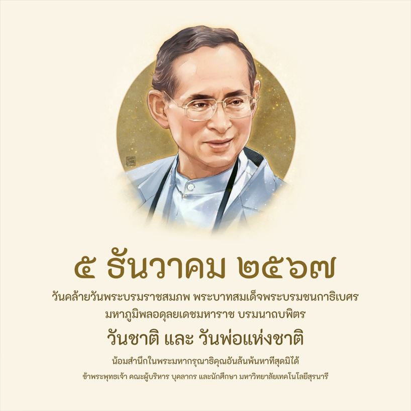

เพลง ใครหนอ หนอใคร - ไมค์ ภิรมย์พร
วันพ่อแห่งชาติของไทย เริ่มจัดครั้งแรกปี พ.ศ. 2523 โดยคุณหญิงเนื้อทิพย์ เสมรสุต เพื่อเทิดทูนพระบาทสมเด็จพระเจ้าอยู่หัวรัชกาลที่ 9 ในฐานะ **"พ่อแห่งชาติ"** และยกย่องคุณพ่อทุกคน กำหนดให้ตรงกับวันที่ **5 ธันวาคม** ซึ่งเป็นวันคล้ายวันพระบรมราชสมภพของพระองค์ท่าน โดยมีวัตถุประสงค์เพื่อแสดงความกตัญญูต่อพ่อ และให้พ่อตระหนักถึงหน้าที่ตนเอง.
พ่อหลวงภูมิพล ปวงชนไทยรักมากยิ่ง
เพราะพ่อคือทุกสิ่ง เป็นมิ่งขวัญรวมแผ่นดิน
แม้ท่านจะจากไป ทำน้ำตาไทยไหลริน
แต่ยังเป็นภูมินทร์ ตราบสิ้นนานแสนนานเอย
ที่มาและวัตถุประสงค์
- **ผู้ริเริ่ม:** คุณหญิงเนื้อทิพย์ เสมรสุต นายกสมาคมผู้อาสาสมัครและช่วยการศึกษา.
- **ปีแรก:** พ.ศ. 2523 (ค.ศ. 1980).
- **เหตุผล:**
- พ่อคือบุคคลผู้มีพระคุณต่อครอบครัวและสังคม ควรได้รับการเทิดทูน.
- พระบาทสมเด็จพระบรมชนกาธิเบศร มหาภูมิพลอดุลยเดชมหาราช บรมนาถบพิตร ทรงเป็นพระราชบิดา และทรงมีพระมหากรุณาธิคุณต่อปวงชน จึงทรงเป็น **"พ่อแห่งชาติ"**.
- **วัตถุประสงค์:**
- เทิดทูนพระเกียรติคุณและพระคุณของพ่อ.
- ให้ลูกได้แสดงความกตัญญู.
- ให้พ่อสำนึกในหน้าที่และความรับผิดชอบ.
ความสำคัญของวันที่ 5 ธันวาคม
- เป็นวันคล้ายวันพระบรมราชสมภพของพระบาทสมเด็จพระบรมชนกาธิเบศร มหาภูมิพลอดุลยเดชมหาราช บรมนาถบพิตร.
- เป็นวันชาติไทย (ตั้งแต่ปี พ.ศ. 2503).
- เป็นวันพ่อแห่งชาติ (ตั้งแต่ปี พ.ศ. 2523).
- ปัจจุบันเป็นวันหยุดราชการด้วย.